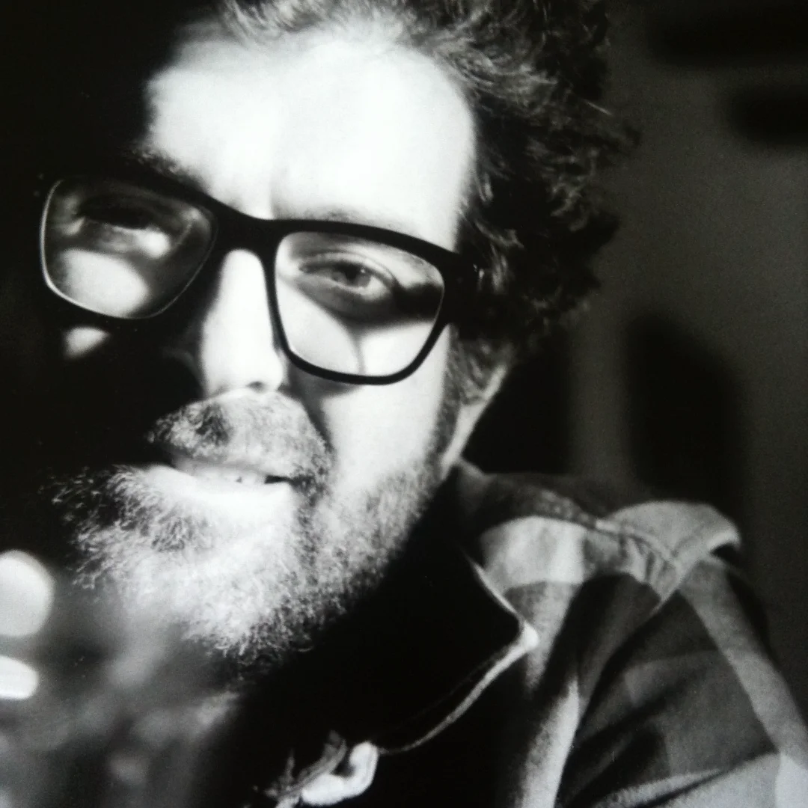

About
Studioaprile is the practice of Dario D’Aprile, an artist based in Brixton, South London.
The work is structured around Material Recording, an ongoing practice documenting how wood behaves under constraint, pressure, and time.
D’Aprile’s work spanned photography, visual art, and sculptural research. He holds a master’s degree in design and has exhibited internationally. Earlier projects examined spatial perception, landscape and human–environment relationships, providing the groundwork for later investigations into material systems and constraint.
Alongside his artistic practice, D’Aprile spent over two decades working in technology and product development. This background informs the procedural structure, documentation logic and system-based approach that underpin Material Recording.
Studioaprile operates as a working practice rather than a studio brand, with research, production and documentation taking place in parallel.
For enquiries or workshop visits: